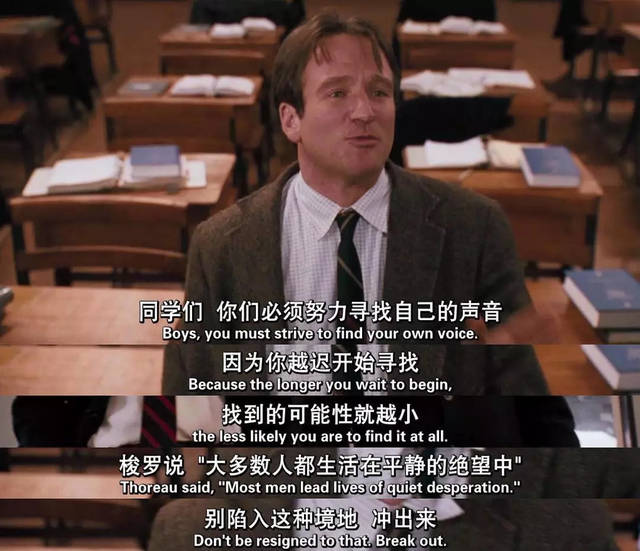

人本主义心理学的主要代表人物是马斯洛和罗杰斯。 人本主义心理学的学习理论从全人类教育的视角阐释了学习者整个人的成长经历，以发展人性； 注重启发学习者的经验和创造潜能，引导其结合认知与经验，肯定自我，进而自我实现。 以下主要介绍罗杰斯的学习理论。
罗杰斯的教育理想就是要培养“躯体、心智、情感、精神、心力融汇一体”的人，也就是既用情感的方式也用认知的方式行事的情知合一的人。 他称这种情知合一的人为“全人”或“功能完善者”。 要实现这一教育理想，应该有一个现实的教学目标，就是“促进变化和学习，培养能够适应变化和知道如何学习的人”。 人本主义重视的是教学的过程而不是教学的内容，重视的是教学的方法而不是教学的结果。
罗杰斯认为，学生学习主要有认知学习和经验学习两种类型，学习方式有无意义学习和有意义学习两种。
人本主义者倡导有意义的自由学习观，有意义学习关注的是学习内容和个人之间的关系。
有意义学习不仅仅是一种增长知识的学习，而且是一种与每个人各部分经验都融合在一起的学习，
是一种对个体的行为、态度、个性以及在未来选择行动方针时有重大影响的学习。
例如，当一个儿童触到一个取暖器时，他就可以学到“烫”这个词的意义，同时也学会了以后对所有的取暖器都要小心，
迅速学到的这些内容和意义会长期保留在儿童的记忆中。
罗杰斯所倡导的学习原则的核心就是让学生自由学习。
人本主义的教学观是建立在其学习观的基础上的。罗杰斯认为，凡是可以教给别人的知识相对来说都是无用的； 能够影响个体行为的知识，只能是他自己发现并加以同化的知识。 教师的任务是为学生提供各种学习的资源，提供一种促进学习的气氛，让学生自己决定如何学习。 该教学观主张废除“教师”这一角色，代之以“学习的促进者”。
罗杰斯认为促进学生学习的关键不在于教师的教学技巧、专业知识、课程计划等，而在于特定的心理氛围因素。 罗杰斯认为，促进学习的心理氛围因素包括以下几点：
①真诚一致。
②无条件积极关注（尊重、关注、接纳）。
③同理心（同情）。